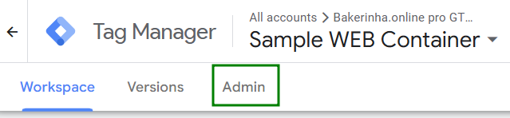
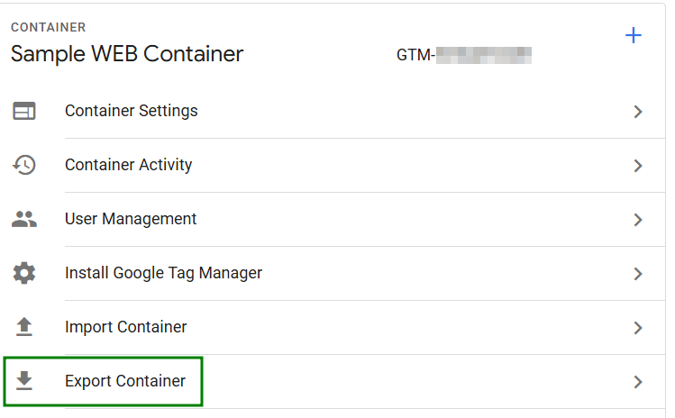
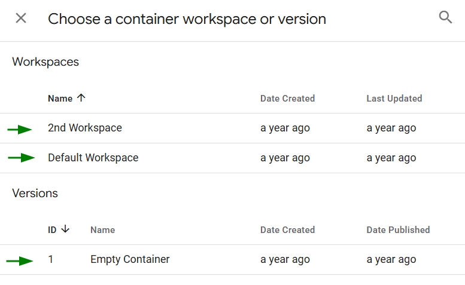
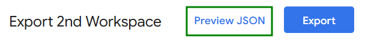
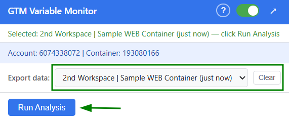
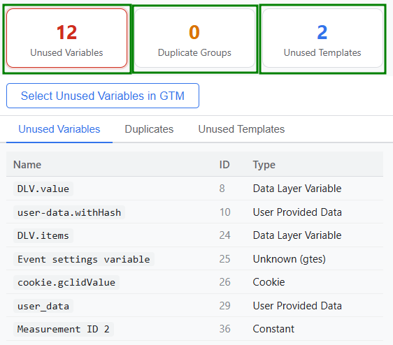
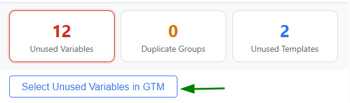

Extension is disabled.
Toggle the switch above to enable.
Navigate to tagmanager.google.com and open the container you want to analyze.
Choose the Admin tab from the top navigation.
Click on Export Container from the right menu.
Select either a previously published version or any of the current workspaces.
Click the Preview JSON button. The extension will automatically intercept the export data.
Open the extension popup. The intercepted export will appear in the Export data dropdown. Select it and click Run Analysis.
Review the results in the three tabs: Unused Variables, Duplicates, and Unused Templates. Click the summary cards to switch between tabs.
To auto-select unused variables for deletion, make sure you are on the GTM page and click Select Unused Variables in GTM. The extension will navigate to the variables overview and check the matching rows.
